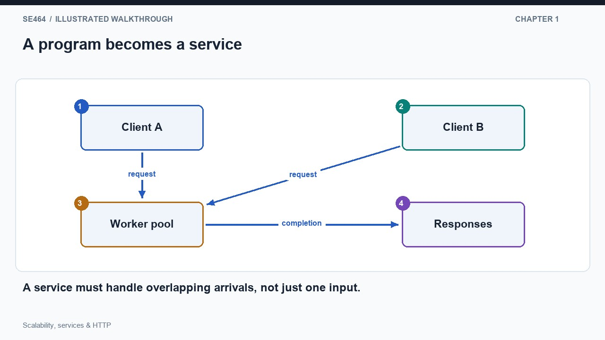
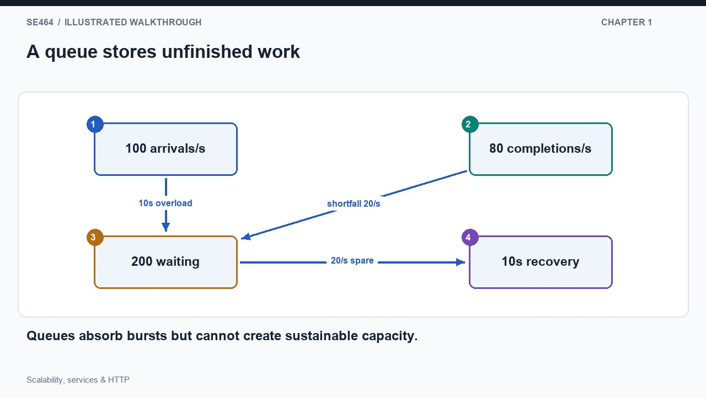
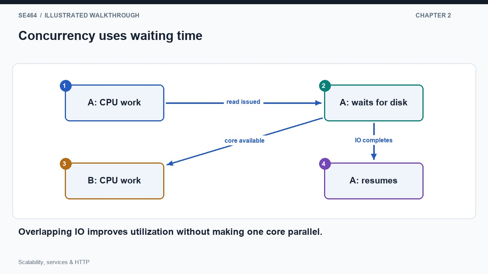
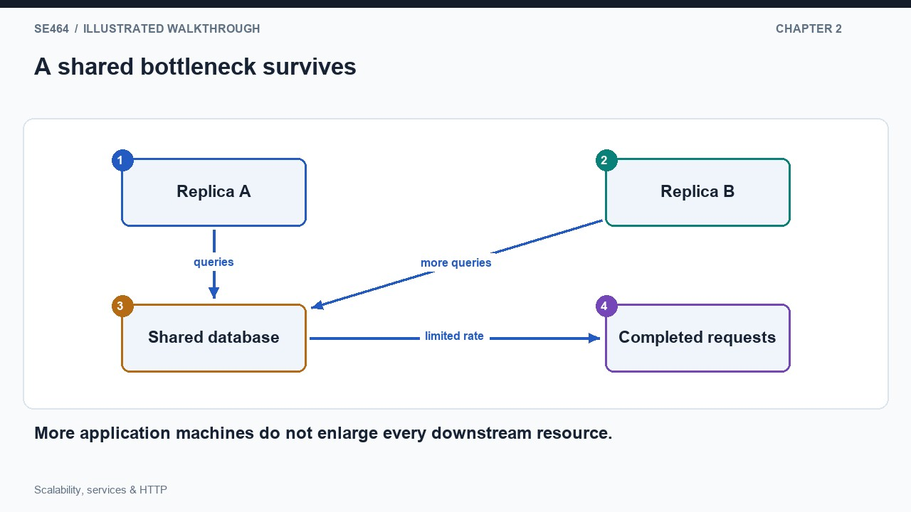
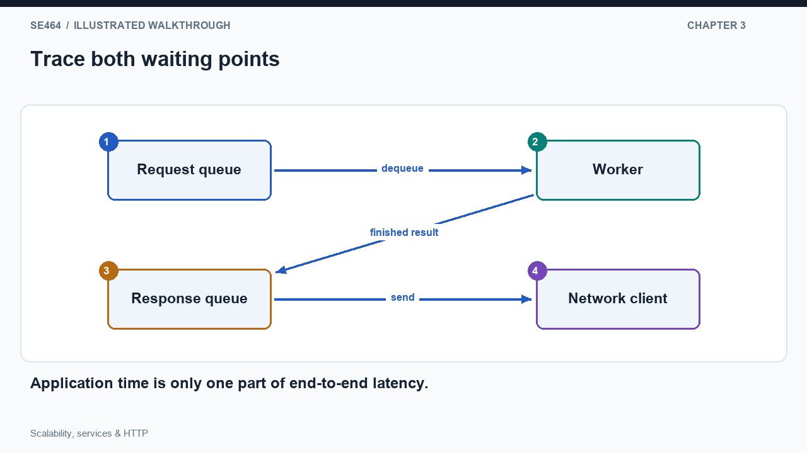
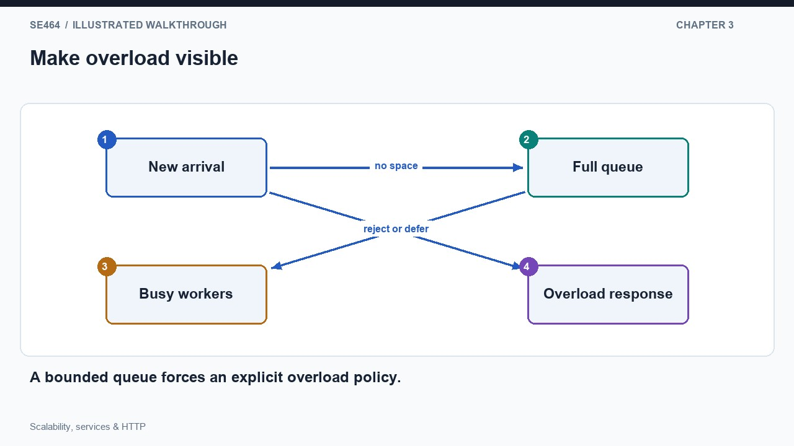
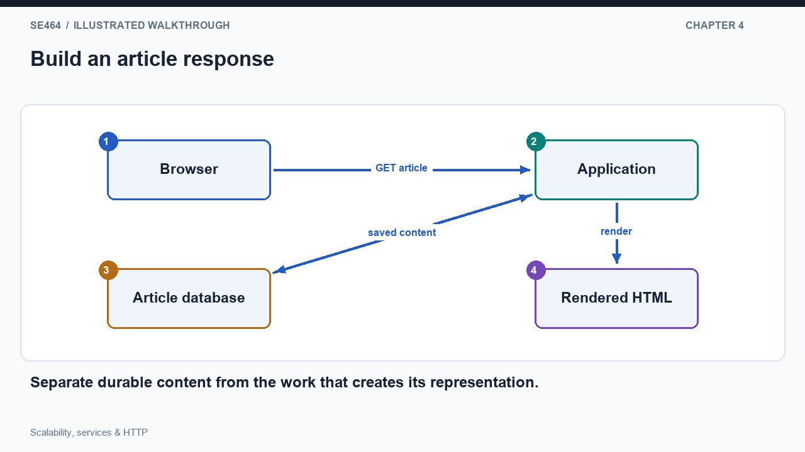
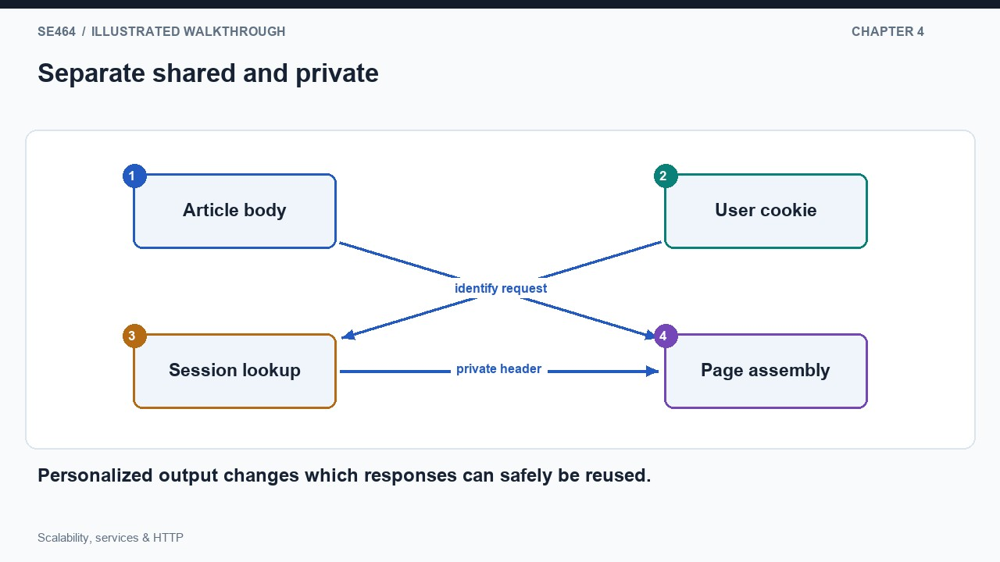

Move from a program to a concurrent service, identify resource limits, and trace an HTTP request through a web application.
Imagine a sorting program that reads one file, produces its answer, and exits. Its running time can be studied as the input grows. Now expose that calculation as a network service. The process remains available, accepts requests from unrelated clients, and may still be working on one request when another arrives. The input size of an individual job is no longer the only source of growth: the arrival rate and the overlap between jobs matter too. In the diagram, several clients feed one worker pool. Increasing the number of clients without increasing useful processing capacity creates waiting, even if every individual calculation uses an efficient algorithm.
Consider a service that completes 80 small lookups per second under a particular workload. If arrivals rise to 100 per second for ten seconds, a simplified model accumulates 200 unfinished requests. When arrivals return to 60 per second, the service has 20 completions per second available to remove that backlog, so recovery takes another ten seconds. The queue is a temporary reservoir, not an extra processor. This example explains why a capacity claim must include more than registered users or a peak request count. Follow arrivals, completions, waiting time, and errors together; otherwise an apparently successful service may merely be postponing the work until clients abandon it.
A useful workload description specifies operation types, input sizes, arrival patterns, and acceptable outcomes. Searching a short record is different from exporting a large collection, even when both count as one request. Monthly active users measure an audience over time, whereas simultaneous requests describe overlap at a particular moment. Neither can be converted into processing demand without additional assumptions. Architecture adds further concerns: requests cross networks, share mutable data, and encounter component failures. Start with a measurable service objective, then ask whether additional resources can support more demand while maintaining that objective. Efficient code remains necessary, but the system must also coordinate its resources and remain available throughout repeated use.


No. Throughput alone hides queueing and user experience; the result must meet a stated latency and error target.
Suppose a service spends most of its time waiting for a file or a remote database. While one request is blocked, another request can use the processor. Several threads can therefore improve utilization even on a machine with only one core. That does not mean the core executes several computations at the same instant: the operating system schedules runnable work while blocked work waits. In the illustration, request A uses the CPU, waits for storage, and resumes; request B occupies part of A's waiting interval. If the work instead consists almost entirely of computation, overlapping threads cannot manufacture additional execution capacity on that same core.
Vertical scaling replaces or upgrades a machine with more useful resources: cores, memory, storage bandwidth, or faster processors. Horizontal scaling adds machines and distributes requests between them. Picture two application replicas that both query the same database. Adding the second replica helps only while that database and the connecting network can support the extra work. If the database already limits completions, two application queues simply converge on the same narrow point. The figure contrasts extra execution capacity with an unchanged shared dependency. Diagnose the limiting resource first, change one capacity assumption, and repeat the same workload measurement to establish whether the bottleneck has actually moved.
A larger single machine often keeps deployment and data sharing simpler because coordination can remain within one operating system. Its limits include the largest available configuration, the cost of high-end capacity, and the effect of losing that machine. Multiple machines offer additional aggregate resources and opportunities for replacement, but introduce network communication, request placement, and shared-state problems. Neither choice guarantees linear speedup. For example, a global lock can serialize work across many cores, while additional replicas may overload a downstream database. Choose the smallest architectural change that meets the measured objective, and include capacity during failures and maintenance rather than reasoning only about the all-healthy case.


No. IO waits, serial work, locks and external dependencies can dominate.
A server framework separates network handling from application work. The network-facing component accepts a request and makes it available to a worker. A worker removes one request, runs the application handler, and places its response where the networking component can send it. When the request queue is empty, waiting workers can block instead of continuously polling. When the response side is congested, completed work may also wait before reaching a client. The diagram deliberately includes both queues: observing a fast application function alone does not establish a fast end-to-end response. Time can be spent before the function starts and after its computation has finished.
Now fill the arrival queue while every worker is busy. An unlimited queue keeps accepting requests but consumes memory and lets waiting time increase without bound under sustained overload. A bounded queue creates an explicit decision point: accept work while space remains, then reject it or apply backpressure when capacity is exhausted. The illustration shows a full queue diverting a new arrival to an overload response instead of hiding it behind an ever-growing backlog. Rejection is not automatically desirable, but an early, meaningful failure can be more useful than a response that arrives after the client has already timed out and submitted another request.
HTTP describes the external exchange rather than prescribing this worker design. A request contains a method, target, fields, and sometimes content; a response supplies a status, fields, and possibly content. Frameworks parse and construct these messages so application code can focus on routing, validation, and domain behavior. Some frameworks use worker threads, others processes or asynchronous event handling. These approaches differ in how they schedule computation and waiting, but clients should observe the same documented contract. During a design review, draw the protocol messages separately from the implementation queues, then mark where deadlines, cancellation, queue limits, and error responses apply. This connects interoperability to the practical behavior of overload.


The queue grows unless bounded; latency rises, and a bounded system eventually rejects or slows arrivals.
Follow a reader opening an encyclopedia article in the historical architecture example. The browser sends an HTTP request identifying the article. The application extracts that identity, retrieves the article's saved wiki text from a database, transforms it into HTML, and adds navigation and other page structure. The database retains the editable content; the application computes a representation of it. These are different responsibilities even if a small deployment initially puts them on the same machine. The illustration highlights the storage read and rendering step separately, so we can later ask whether repeated reads or repeated transformations dominate the cost of serving the page.
Next compare two readers requesting the same article. Most of the article body may be identical, but the page header can differ because a signed-in reader sees account controls or notifications. The browser supplies a cookie with its request, allowing the application to obtain the relevant identity or session information. In the diagram, shared article content and user-specific information enter different branches before the final page is assembled. Reusing the entire assembled response without distinguishing users could disclose one reader's information to another. A cache design should therefore begin by identifying which fragments are shared, which vary, and which request properties select the correct representation.
This walkthrough also explains why merely multiplying web servers does not complete the scaling story. Each application replica may still read from the same authoritative database, while large media objects may use a separate file or object store. An optional cache can avoid some repeated work, but it must preserve the intended freshness and privacy behavior. Treat the historical product names and instance counts as context for the example, not as current deployment recommendations. The transferable skill is to trace one request, label each component's responsibility, and then repeat the trace for an edit, a second reader, and a component failure. Those variations expose the architectural decisions that a static collection of boxes conceals.


No. Shared article content and user-specific response content require different reuse policies.
While one worker blocks on IO, another can use the CPU. This improves utilization without parallel CPU execution.
Horizontal app scaling moved neither the database capacity nor its contention bottleneck. Measure and address that shared resource.
Browser sends HTTP request; MediaWiki reads wiki text from the database, renders and wraps HTML, adds request-specific content, then returns an HTTP response.
A portal receives 15 requests per second. Each worker can process 5, but all requests use a database capped at 12. Describe the effect of moving from two to four workers, and propose a measurement plan.
Two workers cap ideal throughput at 10; four workers move the cap to the database at 12. At a steady arrival rate of 15, the queue continues to grow. Measure throughput, tail latency, errors, CPU, database wait time, and query costs under a reproducible workload. Consider reducing database work and controlling admission before adding further workers.
Questions-only worksheet · Worked answer sheet
A rendering service runs on one machine with eight CPU cores. Each request uses 40 ms of CPU and no significant I/O. At 180 requests/s, CPU use is roughly 90%. A proposal doubles the number of worker processes on the same machine without adding cores or changing request work. Which prediction is best justified for sustained throughput, ignoring scheduler overhead for the estimate?
Best answer: C.
The same eight cores provide at most eight CPU-seconds per second. At forty milliseconds per request, the ideal CPU capacity is 8/.040=200 requests/s, so 180 requests/s consumes 7.2 CPU-seconds/s, or 90%. More worker processes may alter scheduling but cannot double this CPU budget. Additional cores, lower per-request work or reduced offered work can raise the bound. Real capacity may be lower because of scheduling, synchronization and other overhead, so the calculation is an upper-bound model rather than a guaranteed throughput.
Workers expose concurrency, while cores provide execution capacity for a CPU-bound workload.
A customer-support service has four application instances. Each holds a conversation draft only in local memory, and a load balancer uses sticky routing. Operators want to replace all instances one at a time without losing drafts or interrupting ongoing conversations. Propose a migration sequence and failure test. Explain why sticky routing alone does not satisfy the deployment requirement, even if ordinary traffic remains correctly routed.
Introduce an authoritative shared draft store with versioned updates, then migrate active drafts before relying on replacement instances. A transitional release can persist drafts and read shared state while retaining compatibility with old clients. Drain an instance from new traffic, finish or transfer active work, verify persistence and then terminate it. Sticky routing only selects a process; it does not preserve that process’s memory. Test abrupt termination during an acknowledged draft update and require another instance to recover the acknowledged version without overwriting a newer edit.
Deployment continuity is a state-ownership and update-semantics problem as well as a routing problem.
A download portal must serve 90 files per second during a launch. Each response transfers exactly 2 MB, using decimal units. The application has ample CPU, but its outbound link is limited to 1 Gbit/s; ignore protocol overhead. Calculate whether the link can sustain the load. A compressed representation averages 1.2 MB and takes an extra 3 ms CPU per response. Evaluate the bandwidth effect and identify the next measurement needed.
The original traffic is 90×2=180 MB/s, or 1,440 Mbit/s, exceeding the 1,000 Mbit/s link. Its ideal link-limited capacity is 125 MB/s divided by 2 MB, or 62.5 responses/s. Compression lowers demand to 108 MB/s=864 Mbit/s, which fits the ideal link budget but leaves limited overhead margin. Its added CPU demand is 90×.003=.27 CPU-seconds per second. Measure actual transfer sizes, protocol overhead, compression CPU and burst behavior to verify that the new bottleneck has not moved elsewhere.
Scaling choices should address the limiting resource; adding application workers cannot widen a saturated network link.